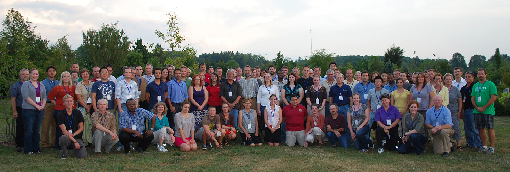

Project Participants and Collaborators
|  |
This Climate and Corn-based Cropping Systems Coordinated Agricultural Project convenes teams from 10 Land Grant Universities and two USDA Agricultural Research Service laboratories across 9 states in the Midwest (Illinois, Indiana, Iowa, Michigan, Minnesota, Missouri, Ohio, South Dakota, and Wisconsin). The teams are comprised of biophysical and social scientists including soil scientists and agronomists, sociologists, economists, agricultural engineers, modelers, and climatologists as well as educators and extension field specialists. Team members also include 200 farmers within this region. (Team members attending the 2012 annual meeting are pictured above.)
Staff/Operations Team
The operations team provides overall direction and support for all project team members, including developing and maintaining data collection tools and standards and assisting with communications with internal and external audiences.
Field Research Team
The field research team has developed standardized methods and performed baseline monitoring of carbon, nitrogen and water footprints at agricultural sites across the Midwest. They are currently collecting an expanse of field research data centered around current and novel management practices, including the use of cover crops, no-till, integrated pest management, canopy nitrogen sensors and drainage water management. These practices have the potential to increase the resiliency of corn-based cropping systems to a changing climate, while also reducing a system's carbon, nitrogen and water footprints.
Analysis and Predictive Modeling Team
This team is working to integrate economic and climate data into the cropping systems database established by the field research team, for life cycle analysis and predictve modeling.
Social and Economic Research Team
This project's social and economic research is focused on economic assessment of corn-based cropping systems and gaining knowledge of farmer beliefs and concerns about climate change, their attitudes toward adaptative and mitigative strategies and practices, and what support farmers need to make decisions. These research findings and participation in this project by farmers in the upper Midwest provide feedback for project scientists conducting field trials, analysis and modeling. Social and economic research findings will also form the framework for developing tools for farmer decision-making, education curricula and science-based policies.
Extension Team
The Extension Team is facilitating participatory exchange of climate and agricultural knowledge among farmers, extension educators and other teams on this project
Education Team
The Education Team is working to develop grades 6-12 educational materials that teach what we're learning about agriculture and climate. They also develop learning opportunities for undergraduate and graduate students currently participating on this or other project teams.
Graduate Students
Our participating graduate students are working hard to become discipline-based scientists as well as learning how to bridge disciplines and work collaboratively to address complex, societal challenges that will be expected in current and future scientific fields.
Undergraduate Students
Undergraduate students also serve as team members, working closely with faculty and staff on specific parts of the project at their home university. They earn money, gain experience working in their field, and earn academic credit while fulfilling work responsibilities.
Advisory Board
Because of the large amount of coordination and stakeholder involvement required for the project, as well as the high level of technical expertise required for the monitoring, database and modeling aspects, the project is advised by an External Advisory Board.
Collaborators:
Regional Approaches to Climate Change (REACCH)